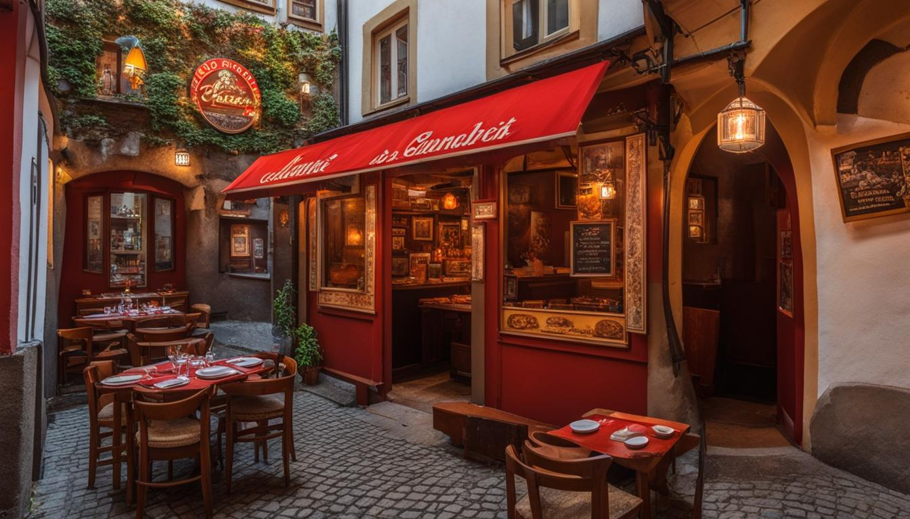

Domů
Na této stránce naleznete tradiční české recepty, které zahrnují:
- Svíčková na smetaně - krémová omáčka s hovězím masem.
- Knedlíky - klasická příloha podávaná k mnoha pokrmům.
- Trdelník - sladká pochoutka oblíbená na trzích.
Připravte si tyto lahodné pokrmy podle našich jednoduchých receptů!
